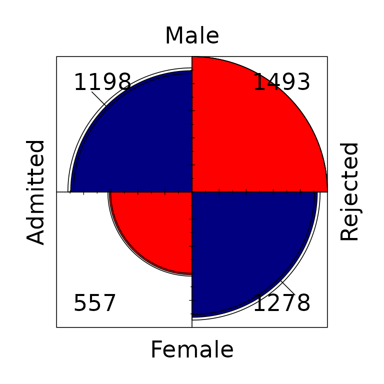
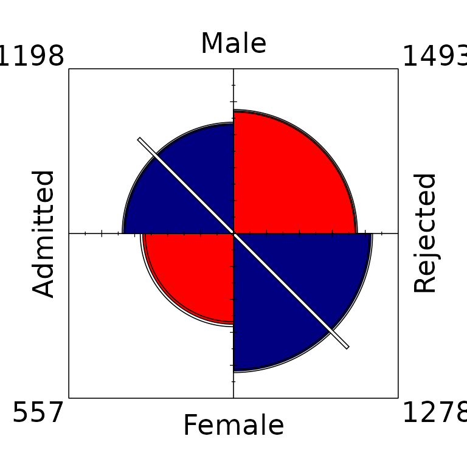
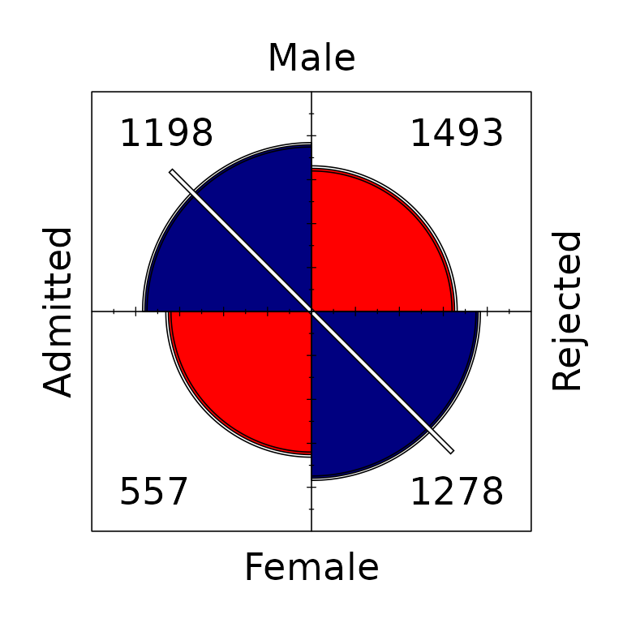
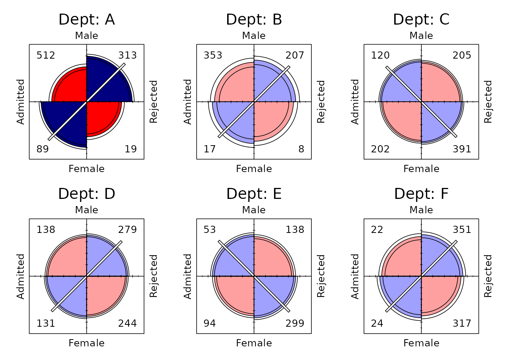
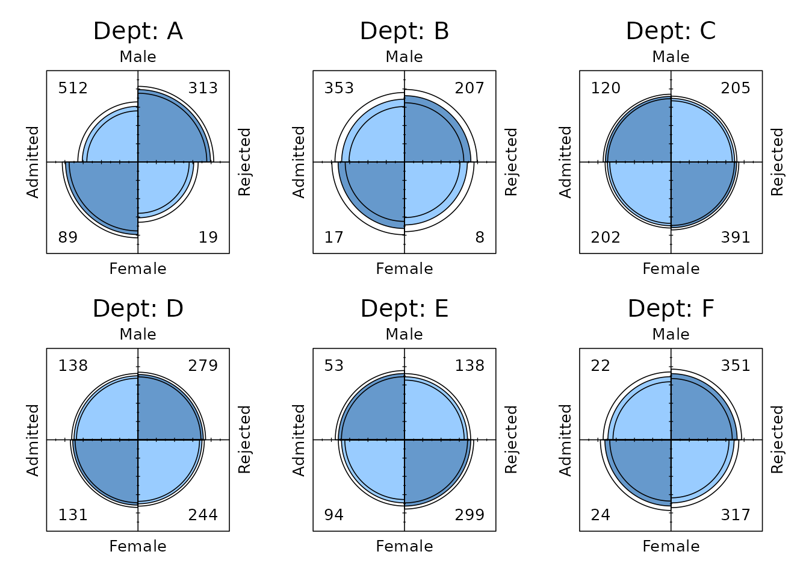
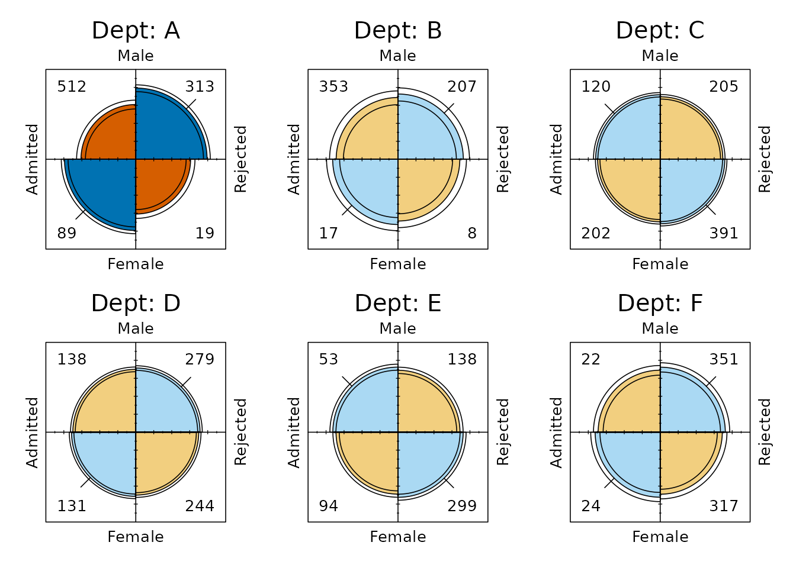
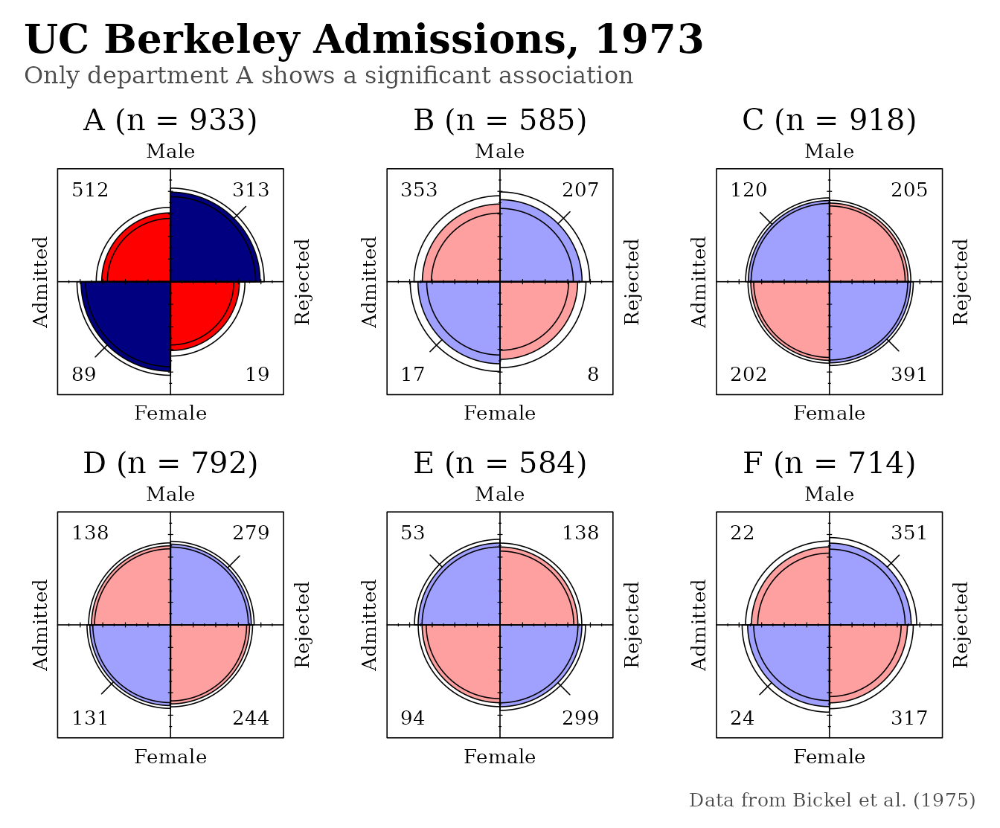

Fourfold Displays for 'ggplot2'
Michael Friendly and Gavin Klorfine
2026-10-03
Source:vignettes/ggfourfold.Rmd
ggfourfold.Rmdggfourfold provides geom_fourfold() and
theme_fourfold() for drawing fourfold displays of \(2 \times 2\) and \(2 \times 2 \times k\) tables with
ggplot2 to show the direction and
strength of association between two binary variables,
and its pattern of association across \(k\) strata.
For example, in the classic case we use here, one could ask if there is an association between gender and admission to graduate school, and whether this association varies across the departments applied to. This introduction follows the treatment in Friendly & Meyer (2016, Section 4.4).
Fourfold displays
The fourfold display is a special case of a radial diagram, or “polar area chart”, designed for \(2 \times 2\) (or \(2 \times 2 \times k\)) tables (Fienberg, 1975; Friendly, 1994a, 1994b). The frequency \(n_{ij}\) in each cell is shown by a quarter circle whose radius is proportional to \(\sqrt{n_{ij}}\), so that its area is proportional to the cell count.
Like a pie chart, it uses segments of a circle to show frequencies; unlike a pie chart, it keeps the angles of the segments constant and varies the radius. This is the \(2 \times 2\) cousin of the graphic form used by Florence Nightingale (Nightingale, 1858). Friendly & Andrews (2021) describe the rich history of radial diagrams.
The main purpose of the display is to show the sample odds ratio. This gives a number that compares the odds of an event (accepted!) happening in one group (men) to the odds of it happening in another group (women).
\[ \hat{\theta} = \frac{n_{11} / n_{12}}{n_{21} / n_{22}} = \frac{n_{11} \, n_{22}}{n_{12} \, n_{21}} . \]
An association between the two variables (\(\theta \neq 1\)) appears as a tendency for one pair of diagonally opposite cells to be larger than the other pair. The fourfold plot shows the association and the odds ratio visually as follows:
Color and diagonal tick marks show the direction of association: the relatively larger diagonal pair is drawn in blue (more than expected under independence) with the tick marks along that diagonal, and the other pair in red.
Confidence rings around each quadrant give a visual test of independence, \(H_0: \theta = 1\): in a standardized display, the rings for adjacent quadrants overlap if and only if the observed counts are consistent with the null hypothesis.
Example: Berkeley admissions
The classic example, UCBAdmissions gives applicants to
the six largest graduate departments at Berkeley in 1973, classified by
admission and gender (Bickel et al.,
1975). geom_fourfold() currently works on data in
long form: map the two-level variables to x (drawn
left to right) and y (drawn top to bottom), and the cell
frequencies to weight. Without faceting, rows for the same
cell are summed, so this pools over departments:
ucb <- as.data.frame(UCBAdmissions)
berkeley <- ggplot(ucb, aes(x = Admit, y = Gender, weight = Freq)) +
theme_fourfold()The unstandardized display (std = "ind.max")
shows the raw frequencies, with the largest cell drawn at full size. The
sample odds ratio, Odds(Admit | Male) / Odds(Admit | Female), is \((1198 / 1493) / (557 / 1278) = 1.84\): male
applicants were nearly twice as likely to be admitted.
berkeley + geom_fourfold(std = "ind.max")
These comparisons are difficult because there are more male applicants than female, and because more applicants were rejected than admitted. In the unstandardized display the confidence rings have no interpretation as a test of \(H_0: \theta = 1\).
The data can be standardized to make the comparison easier while
preserving the odds ratio. With margin = 1 the rows (here,
Gender) are equated, so each quadrant shows the proportion
of men or women who were admitted or rejected: 44.5% of male applicants
were admitted, compared with 30.4% of female applicants. Now the rings
for each upper quadrant overlap those of the quadrant below it if the
odds ratio does not differ from 1.
berkeley + geom_fourfold(margin = 1)
The default, margin = c(1, 2), standardizes
both margins. The four quadrants then align horizontally and
vertically when the odds ratio is 1, regardless of the marginal
frequencies, so the association between admission and gender can be seen
without the influence of the overall admission rate or of the numbers of
men and women who applied. This fully standardized display is usually
the most useful form.
berkeley + geom_fourfold()
The quadrants do not align, and the 95% confidence rings, computed from the interval \(1.62 \le \theta \le 2.09\), do not overlap: the odds ratio differs significantly from 1, apparent evidence of gender bias in favour of men.
Stratified \(2 \times 2 \times k\) tables
In a \(2 \times 2 \times k\) table
the third variable often defines strata, and the question is whether the
association between the first two is the same in each stratum. Make one
fourfold display per stratum with facet_wrap() or
facet_grid(); standardizing the margins within each panel
allows the pattern of association to be compared across strata even when
their marginal frequencies differ.
berkeley +
geom_fourfold() +
facet_wrap(vars(Dept), ncol = 3, labeller = label_both)
Surprisingly, for five of the six departments the odds of admission
are about the same for men and women. Only Department A differs, and in
the opposite direction: there women were about 2.86 times as likely as
men to be admitted (\(1 / 0.349\)). The
more intense colours mark the one panel whose odds ratio differs
significantly from 1. With several strata, geom_fourfold()
adjusts the p-values that control this emphasis for multiple testing, by
default using Holm’s method via stats::p.adjust(); the
confidence rings themselves are not adjusted.
This reversal of the aggregate result is an example of Simpson’s paradox, and it shows why an analysis of a table collapsed over a third variable can mislead. Men and women applied to departments in different proportions, and women applied in greater numbers to departments with low admission rates.
Because a fourfold display keeps the angle of each cell fixed, corresponding cells are always in the same position in every panel. An array of fourfold displays therefore supports controlled comparison, against a standard with other things held constant, much better than an array of pie charts. Standardizing the margins adds a further standard for comparison while preserving the odds ratio, the quantity the display is designed to show.
Confidence rings
Each quadrant of a fourfold display is drawn with a pair of thin
rings, one just inside and one just outside its edge. Together they show
the range of tables that are consistent with the data at the confidence
level given by conf_level (0.95 by default). They are
constructed in three steps.
1. An interval for the odds ratio. Inference is simplest on the log scale. The log odds ratio, \(\hat{\psi} = \log \hat{\theta}\), has an approximate standard error
\[ \hat{s}(\hat{\psi}) = \sqrt{\frac{1}{n_{11}} + \frac{1}{n_{12}} + \frac{1}{n_{21}} + \frac{1}{n_{22}}} , \]
so an approximate \(1 - \alpha\)
confidence interval for \(\psi\) is
\(\hat{\psi} \pm z_{1 - \alpha/2} \,
\hat{s}(\hat{\psi})\). Exponentiating its end points, \(\hat{\psi}_l\) and \(\hat{\psi}_u\), gives the interval \(\{\exp(\hat{\psi}_l),
\exp(\hat{\psi}_u)\}\) for \(\theta\). (If any cell is zero, 0.5 is
first added to every cell, as in vcd::fourfold().) For the
pooled Berkeley data, \(\hat{\psi} =
0.610\) and \(\hat{s} =
0.0639\), so the 95% interval for the odds ratio runs from 1.624
to 2.087.
2. A table for each end of the interval. Each limit is turned into the \(2 \times 2\) table that has that odds ratio. When both margins are equated, such a table has the symmetric form
\[ \begin{bmatrix} p & 1 - p \\ 1 - p & p \end{bmatrix} , \]
whose odds ratio is \(\theta = p^2 / (1 - p)^2\). Solving for \(p\) gives \(p = \sqrt{\theta} / (1 + \sqrt{\theta})\). More generally, the table can be found that keeps the observed row and column totals and has the required odds ratio; with the margins fixed, the whole table follows from a single cell, which is the root of a quadratic equation.
3. Draw the tables like the data. Each limiting
table is standardized in the same way as the observed table
(std, margin) and drawn as outlines over the
quadrants. For the Berkeley data this gives:
| Odds ratio | \(p\) | Male, admitted | Male, rejected | Female, admitted | Female, rejected | |
|---|---|---|---|---|---|---|
| Lower 95% limit | 1.624 | 0.560 | 1167.1 | 1523.9 | 587.9 | 1247.1 |
| Observed | 1.841 | 0.576 | 1198 | 1493 | 557 | 1278 |
| Upper 95% limit | 2.087 | 0.591 | 1228.4 | 1462.6 | 526.6 | 1308.4 |
Every row has the observed margins, 2691 male and 1835 female applicants, of whom 1755 were admitted. Only the balance among the cells changes.
Reading the rings
The distance between the rings of a quadrant shows the precision of the estimate: large samples give narrow rings, like those for the pooled Berkeley data above, and small samples give wide ones.
More usefully, the rings give a visual test of independence, \(H_0: \theta = 1\). When both margins are equated, independence corresponds to \(p = 1/2\), so all four quadrants would have the same radius. If the confidence interval for \(\theta\) includes 1, that table of equal quadrants lies between the rings, and the rings of each pair of adjacent quadrants overlap. If the interval excludes 1, the rings of adjacent quadrants are separated. For the pooled Berkeley data, they are clearly separated.
How much of this reading holds depends on the standardization:
- With both margins equated (the default), the test applies in both directions, between horizontally and vertically adjacent quadrants.
- With
margin = 1, only the rows are equated. The rings of each upper quadrant and the quadrant below it overlap if and only if the interval includes 1; nothing can be said about quadrants side by side, because the column totals have not been equated. - In an unstandardized display (
std = "ind.max"or"all.max"), the rings still show the precision of each cell, but their overlap is not a test of \(H_0\).
With several strata, each panel’s rings show that stratum’s own
interval at conf_level. They are not adjusted for multiple
comparisons, as is also the case in vcd::fourfold(). Only
the p-values that decide which panels are drawn in the more
intense colours are adjusted (Holm’s method, by default). A stratum
whose rings only just separate can therefore still be drawn in the paler
colours. Set conf_level = 0 to omit the rings.
Customizing the display
Square cells
ggfourfold allows for four squares to be drawn instead
of quarter-circles via the shape argument of
geom_fourfold(). Squares are drawn with area equal to the
quarter-circle they replace (side \(r\sqrt{\pi}/2\) for radius \(r\)), and confidence rings become square
outlines that are read in the same way.
berkeley +
geom_fourfold(shape = "square") +
facet_wrap(vars(Dept), ncol = 3, labeller = label_both)Cell counts
By default, raw cell counts are pictured in the inside corners of each display’s frame; however, if the drawing of quarter-circles (or squares) comes close to overlapping these counts, they are displayed just outside the frame of each display.
To fix the placement, supply counts = "inside" or
counts = "outside" to geom_fourfold().
counts = "none" hides them, while the default, automatic
placement uses counts = "auto".
berkeley +
geom_fourfold(shape = "square", counts = "inside") +
facet_wrap(vars(Dept), ncol = 3, labeller = label_both)Colours
Displays are extended by default: each stratum is shaded by
the significance of its association, as in the Berkeley examples above,
and direction ticks are drawn. If extended = FALSE is
supplied to geom_fourfold(), every panel is shaded alike,
with the larger diagonal being darker. Significance is not shown and the
direction ticks are omitted, giving a simpler display.
berkeley +
geom_fourfold(extended = FALSE) +
facet_wrap(vars(Dept), ncol = 3, labeller = label_both)
Since colours carry the display’s meaning, they are drawn directly
through the geom rather than mapped through a fill scale.
scale_fill_manual() and similar functions therefore have no
effect. Supply them through the palette argument instead,
as a vector of six colours in the same order used by
fourfold_palette().
fourfold_palette()
#> [1] "#99CCFF" "#6699CC" "#FFA0A0" "#A0A0FF" "#FF0000" "#000080"The six colours form three pairs:
- Colours 1–2 are used when
extended = FALSE - Colours 3–4 are used for a stratum whose association is not significant
- Colours 5–6 are used for a stratum whose association is significant after adjustment
Within each pair, the first colour fills the diagonal with fewer cases than expected under independence and the second fills the diagonal with more.
For example, we can construct a palette based on the Okabe-Ito colours (Okabe & Ito, 2008), which remain distinguishable for readers with common forms of colour-deficient vision. Lightened orange and sky blue mark strata whose association is not significant, while vermillion and blue mark those whose association is significant.
okabe_ito <- c(
"#56B4E9", "#0072B2", # extended = FALSE: sky blue, blue
"#F2CF7F", "#AAD9F3", # not significant: orange, sky blue (lightened)
"#D55E00", "#0072B2" # significant: vermillion, blue
)
berkeley +
geom_fourfold(palette = okabe_ito) +
facet_wrap(vars(Dept), ncol = 3, labeller = label_both)
This palette is also built into ggfourfold, so the same
display can be drawn with
fourfold_palette("okabe-ito").
berkeley +
geom_fourfold(palette = fourfold_palette("okabe-ito")) +
facet_wrap(vars(Dept), ncol = 3, labeller = label_both)Working with ‘ggplot2’
A fourfold display is an ordinary ggplot, so the usual tools for
finishing a figure all apply. Below, ggplot2::labs() adds a
title that states the finding and adds a caption giving the source of
the data. Additionally, the facet labeller adds the number of applicants
to each panel, which makes the departments easy to compare without
needing to add up their cell counts.
The text drawn by geom_fourfold() itself, such as the
category labels and cell counts, follows the base_size and
base_family of theme_fourfold(), meaning that
a single argument changes the font of the whole figure. If more control
is needed, other theme settings can be passed through the
... of theme_fourfold() or added with
ggplot2::theme() as usual.
applicants <- margin.table(UCBAdmissions, 3)
dept_labels <- sprintf("%s (n = %d)", names(applicants), applicants)
names(dept_labels) <- names(applicants)
ggplot(ucb, aes(x = Admit, y = Gender, weight = Freq)) +
geom_fourfold() +
facet_wrap(vars(Dept), ncol = 3, labeller = labeller(Dept = dept_labels)) +
labs(
title = "UC Berkeley Admissions, 1973",
subtitle = "Only department A shows a significant association",
caption = "Data from Bickel et al. (1975)"
) +
theme_fourfold(base_family = "serif") +
theme(
plot.title.position = "plot",
plot.title = element_text(hjust = 0),
plot.subtitle = element_text(
hjust = 0,
colour = "grey30",
margin = margin(b = 10)
),
plot.caption = element_text(
hjust = 1,
colour = "grey30",
size = rel(0.8),
margin = margin(t = 10)
)
)